유기농업기사 (2016-03-06 기출문제)
1과목: 재배원론
1. 벼에서 나타나는 냉해를 지연형 냉해와 장해형 냉해로 구분하는 가장 큰 이유는?
- 냉해를 일으키는 원인이 다르기 때문이다.
- 냉해를 일으키는 원인과 피해정도가 다르기 때문이다.
- 벼의 품종에 따라 냉해의 양상이 뚜렷하게 구분되기 때문이다.
- 냉해를 입는 벼의 생육시기와 피해양상 및 정도가 다르기 때문이다.
(정답률: 73%)

2. 작물의 일반분류에서 잡곡에 해당하지 않는 것은?
- 기장
- 귀리
- 수수
- 옥수수
(정답률: 65%)
3. 혼파의 장점에 해당하지 않는 것은?
- 영양상의 이점
- 파종작업의 편리
- 공간의 효율적 이용
- 질소질 비료의 절약
(정답률: 74%)
4. 식물의 필수원소 중의 하나인 붕소가 결핍되었을 때 식물에 나타나는 특징적인 증상은?
- 분열조직에 괴사가 일어나고 사과의 축과병과 같은 병해를 일으키며 수정, 결실이 나빠진다.
- 생장점이 말라죽고 줄기가 약해지며 잎의 끝이나 둘레나 황화되고, 심하면 아랫잎이 떨어진다.
- 생육초기에 뿌리의 발육이 나빠지고 잎이 암녹색이 되어 둘레에 점이 생기며, 심하게 결핍되면 잎이 황색으로 변한다.
- 황백화 현상이 일어나고 줄기나 뿌리에 있는 생장점의 발육이 나빠지며 식물체내의 탄수화물이 감소하며 식물체내의탄수화물이 감소하며 종자의 성숙이 나빠진다.
(정답률: 60%)
5. 내염재배에 해당하지 않는 것은?
- 환수
- 황산근 비료 시용
- 내염성품종의 선택
- 조기재배 · 휴립재배
(정답률: 64%)
6. 여러 가지 잡초의 해작용 중에서 유해물질의 분비로 인한 피해란?
- 잡초와 작물과의 양분 경쟁에 의한 피해
- 목초지에서 유해한 잡초로 인한 가축의 피해
- 잡초의 뿌리부터 분비되는 물질로 인한 피해
- 잡초에 기생하는 병해충리 분비하는 유해물질로에 의한 피해
(정답률: 64%)
7. 전 세계로부터 수집한 작물의 연구를 통해서 다양성에 주목하였으며, 모든 Linne종은 아종과 변종으로 구성되어 있으며, 또한 변종은 형태적 및 생태적인 특성이 다른 많은 계통으로 구성되어있다고 한 사람은?
- Camerarius
- Linne
- Mendel
- Vavilov
(정답률: 63%)
8. 주심이 발달하여 형성된 것으로 양분을 저장하는 것은?(오류 신고가 접수된 문제입니다. 반드시 정답과 해설을 확인하시기 바랍니다.)
- 배
- 배유
- 외배유
- 자엽
(정답률: 37%)
9. 작물이 영양 발육단계로부터 생식 발육단계로 이행하여 화성을 유도하는 주요요인이 아닌 것은?
- C/N 율
- T/R 율
- 일장조건
- 온도조건
(정답률: 68%)
10. 종묘로 이용되는 기관이 맞게 연결된 것은?
- 덩이뿌리 – 다알리아, 감자, 뚱딴지
- 덩이줄기 – 감자, 토란, 마늘
- 비늘줄기 – 마늘, 백합, 생강
- 땅속줄기 – 생강, 박하, 호프
(정답률: 73%)
11. 방사선 중 가장 현저한 생물적 효과를 갖고 있는 것은?
- 50Fe
- α
- β
- τ
(정답률: 72%)
12. 개량 삼포식 농업에서 휴한기에 재배하는 작물은?
- 화곡류 작물
- 화본과 목초
- 콩과 목초
- 채소류 작물
(정답률: 81%)
13. 작물미생물의 분포를 고고학, 역사학 및 언어학적 고찰을 통하여 재배작물의 기원지를 증명한 사람은?
- De Candadle
- Vavilov
- Alien
- Peake
(정답률: 59%)
14. 작물에 요소를 엽면시비할 때 알맞은 농도는?
- 1% 정도
- 3% 정도
- 5% 정도
- 7% 정도
(정답률: 59%)
15. 과일의 낙과방지 방법으로 틀린 것은?
- 옥신을 살포한다.
- 질소질 비료를 다소 부족하게 시용한다.
- 관개, 멀칭 등으로 토양 건조를 방지한다.
- 주품종과 친화성이 있는 수분수를 20~30% 혼식한다.
(정답률: 67%)
16. 작물의 내건성에 대하여 가장 올바르게 설명한 것으?
- 잎의 교피에 기공수가 많다.
- 잎이 작고 왜소한 식물이 내건성이 크다.
- 저수능력이 작고, 근군이 표층에 많이 분포한다.
- 건조할 때에 증산작용이 크다.
(정답률: 80%)
17. 다음 중 방사선량의 단위로 사용되지 않는 것은?
- cpm
- rhm
- rad
- rep
(정답률: 67%)
18. 식물이 주로 이용하는 토양의 수분 형태는?
- 결합수
- 중력수
- 흡습수
- 모관수
(정답률: 74%)
19. 종자의 순도가 90%, 100립중이 20g, 수분함량이 15%, 발아율이 80%일 때 종자의 진가(용가)는?
- 13.5
- 18
- 30
- 72
(정답률: 64%)
20. 화본과 작물이 아닌 것은?
- 옥수수
- 귀리
- 수수
- 알팔파
(정답률: 80%)
2과목: 토양비옥도 및 관리
21. 부식물질을 산, 알카리 시약에 용해성으로 구분할 때 해당되지 않는 물질은?
- 아미노산
- 부식산
- 풀빅산
- 휴민
(정답률: 65%)
22. 최초의 미생물 개체수가 105이었고 24시간 배양 후 개체수가 108이었다면. 세대기간은 몇 시간인가?(오류 신고가 접수된 문제입니다. 반드시 정답과 해설을 확인하시기 바랍니다.)
- 1.5시간
- 2.4시간
- 3.6시간
- 5.2시간
(정답률: 59%)
23. 다음 중 질산화 과정으로 옳은 것은?
- NO2-→NH4+→NO3-
- NO3-→NH4+→NO2-
- NH4+→NO3-→NO2-
- NH4+→NO2-→NO3-
(정답률: 74%)
24. 유기물의 토비화 과정 중에서 분해가 용이한 물질부터 순서대로 나열된 것은?
- 당질→헤미셀룰로오스→셀룰로오스→리그닌
- 당질→리그닌→헤미셀룰로오스→셀룰로오스
- 리그닌→셀룰로오스→헤미셀룰로오스→당질
- 당질→셀룰로오스→헤미셀룰로오스→리그닌
(정답률: 66%)
25. 식물이 생육하는데 이용되는 pF 2.7~4.5 상태의 수분(유효수분)을 갖는 토양수분 영역은?
- 결합수
- 흡습수
- 모관수
- 풍건상태
(정답률: 75%)
26. 토양동물에 대한 설명으로 옳은 것은?
- 토양과 대기사이에서 CO2 고정을 증진시킨다.
- 미생물의 분해에 정성이 큰 유기물의 분해를 촉진한다.
- Freash residues의 입자크기를 작게 분해해 그들을 토양과 섞어준다.
- 토양 중에서 개체수가 가장 많다.
(정답률: 57%)
27. 토양의 정전기적 물질흡착에 대한 설명으로 틀린 것은?
- 토양의 pH가 증가하면 CEC가 증가된다.
- 음이온보다 양이온을 더 많이 흡착한다.
- 토양유 기물보다 점도의 흡착용량이 크다.
- 점도함량이 높을수록 흡착능력도 증가한다.
(정답률: 47%)
28. 토양입자와의 결합력이 작아 용탈퇴기 가장 쉬운 성분은?
- Ca+2
- Mg+2
- PO4-3
- NO3-
(정답률: 58%)
29. 모래입자 분석에 사용하는 미국ASTM 표준체 10번 눈금의 크기는?
- 2000㎛
- 1000㎛
- 500㎛
- 10㎛
(정답률: 60%)
30. 필수 식물구성 원소들로만 나열된 것은?
- B, Cl, Si, Na
- K, Ca, Mg, Mn
- Fe, Ca, Mo, Ag
- C, H, O, I
(정답률: 77%)
31. 다음 중 포장용수량이 가장 큰 토성은?
- 사양토
- 양토
- 식양토
- 식토
(정답률: 68%)
32. 다음에서 설명하는 것은?
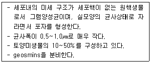
- 균근균
- 탈질균
- 사상균
- 방선균
(정답률: 60%)
33. 양이온교환용량이 20cmolc/kg인 토양입자표면에 흡착되어 있는 H+, Al+3, Ca+2, Mg+2, K+, Na+의 양이 각각 4, 5, 3, 2, 4, 2cmolc/kg이라면 이 토양의 염기포화도는 얼마인가?
- 40%
- 55%
- 70%
- 80%
(정답률: 52%)
34. 비료의 원료인 쌀겨의 성분함량 중 가장 많은 것은?
- 아연
- 인산
- 비타민 A
- 비타민 C
(정답률: 57%)
35. 다음 중 생리적 산성비료는?
- 질산암모늄
- 석회질소
- 황산암모늄
- 요소
(정답률: 56%)
36. 물에 의한 토양침식의 종류가 아닌 것은?
- 면상침식
- 세류간침식
- 구상침식
- 약동침식
(정답률: 67%)
37. 토양 속 세균의 단백질분해효소작용으로 인한 단백질 분해과정으로 옳은 것은?
- 단백질→ammonium→ammonia→amino acid
- 단백질→amino acid→ammonia→ammonium
- 단백질→ammonia→ammonium→amino acid
- 단백질→ammonium→amino acid→ammonia
(정답률: 51%)
38. 다음 중 유효수분함량이 가장 적은 토성은?
- 미사질 양토
- 양토
- 사양토
- 식양토
(정답률: 69%)
39. 양이온교환요량이 가장 적은 토양 콜로이드는?
- 부식
- 일라이트
- 버미큘라이트
- 몬모릴로나이트
(정답률: 55%)
40. 표토의 염류집적에 가장 큰 원인이 되는 수분은?
- 중력수
- 모세관수
- 흡습수
- 결합수
(정답률: 55%)
3과목: 유기농업개론
41. 다음 중 (가), (나)에 알맞은 내용은?
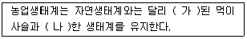
- 가 : 개방, 나 : 단순
- 가 : 개방, 나 : 다양
- 가 : 제한, 나 : 단순
- 가 : 제한, 나 : 다양
(정답률: 73%)
42. 작물의 화아분화에 미치는 외부환경요인 중 가장 중요한 요인으로만 짝지어진 것은?
- 일장, 온도
- 유전소질, 일장
- 식물호르몬, 영양상태
- 파종시기, 일장
(정답률: 79%)
43. 다음 중 혼작 시 유의사항에 관한 설명으로 틀린 것은?
- 재식간격은 작물간의 경합을 최소화하도록 할 것
- 혼작하는 작물은 생장습성과 광요구도가 서로 같아야만 함
- 혼작하는 동안 양분흡수가 가장 활발한 시기는 일치하지 않아야 함
- 다년생 식물은 제철작물과 함께 재배함
(정답률: 60%)
44. 다음 중 ( )에 알맞은 내용은?
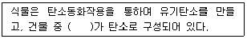
- 30~35%
- 40~45%
- 50~60%
- 65~70%
(정답률: 60%)
45. 다음 중 ( )에 알맞은 내용은?
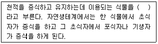
- 미생물
- 잡초
- 뱅커 플랜트
- 트랩
(정답률: 74%)
46. 다음 중 (1), (2)에 알맞은 내용은?(오류 신고가 접수된 문제입니다. 반드시 정답과 해설을 확인하시기 바랍니다.)
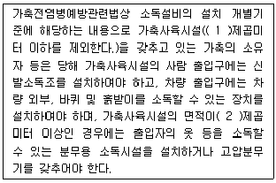
- 1 :50, 2 : 300
- 1 : 100, 2 : 300
- 1 : 200, 2 : 500,
- 1 : 300, 2 : 1000
(정답률: 43%)
47. 친환경관련법상 유기배합사료 제조용 물질 중 단미사료에 관한 내용으로 사용가능 조건이 천연에서 유래한 것이어야 하는 물질은?
- 조
- 루핀종실
- 해조분
- 호밀
(정답률: 65%)
48. 다음 중 ( )에 알맞은 육종법은?
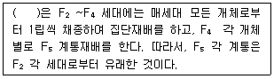
- 파생계통육종
- 1개체 1계통육종
- 돌연변이육종
- 여교배육종
(정답률: 78%)
49. 다음 중 (1), (2), (3)에 알맞은 내용은?
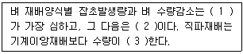
- 1 : 마른논직파재배, 2 : 무논직파재배, 3 : 증가
- 1 : 무논직파재배, 2 : 마른논직파재배, 3 : 증가
- 1 : 무논직파재배, 2 : 마른논직파재배, 3 : 감소
- 1 : 마른논직파재배, 2 : 무논직파재배, 3 : 감소
(정답률: 63%)
50. '부엽토와 지렁이'라는 책에서 자연에서 지렁이가 담당하는 역할에 관해 기술하면서, 만일 지렁이가 없다면 식물은 죽어 사라질 것이라고 결론지었으며, 유기농업의 이론적 근거를 최초로 제공한 사람은?
- Franklin King
- Thun
- Steiner
- Darwin
(정답률: 64%)
51. 가축전염병에서 제1종 가축전염병이 아닌 것은?
- 결핵병
- 구제역
- 돼지 열병
- 우폐역
(정답률: 49%)
52. 다음 중 ( )에 알맞은 내용은?
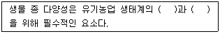
- 신비성, 안정성
- 품종체계, 우수성
- 지속성, 안정성
- 지속성, 특이성
(정답률: 69%)
53. 다음 중 (1), (2)에 알맞은 것은?
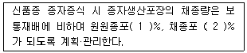
- 1 : 30, 2 : 50
- 1 : 50, 2 : 80,
- 1 : 50, 2 : 100
- 1 :80, 2 : 100
(정답률: 57%)
54. 관재방법 중 지하에 토관·목관·콘크리트관·플라스틱관 등을 배치하여 통수하고, 간극으로부터 스며 오르게 하는 방법은?
- 일류관개법
- 수반법
- 개거법
- 암거법
(정답률: 59%)
55. 다음 중 (1)에 알맞은 내용은?
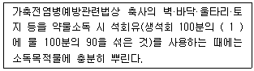
- 20
- 15
- 10
- 5
(정답률: 78%)
56. 다음 유기배합사료 제조용 물질 중 단미사료, 단백질류에 속하지 않는 것은?
- 대두박
- 트리트케일
- 면실박
- 들깻묵
(정답률: 73%)
57. 다음 중 포식성 곤충은?
- 침파리
- 고치벌
- 꼬마벌
- 팔라시스이리응애
(정답률: 68%)
58. 다음 중 쌀에 금만 보이고 싸라기가 되지 않는 것은?
- 완전립
- 경동할립
- 중도할립
- 전동할립
(정답률: 58%)
59. 유기농업에서 소각을 권장하지 않는 이유에 관한 설명으로 틀린 것은?
- 재가 함유하고 있는 양분은 빗물에 쉽게 씻겨 유실된다.
- 많은 양의 탄소, 질소와 황이 고체형태로 잔류한다.
- 식물체는 태우는 것보다 토양유기물의 원료로 더 유용하게 쓰일 수 있다.
- 소각함으로써 익충과 토양생물에 피해를 준다.
(정답률: 55%)
60. 다음 중 호밀의 최적온도는?
- 2℃
- 15℃
- 25℃
- 35℃
(정답률: 44%)
4과목: 유기식품 가공.유통론
61. MAP 포장방법에 대한 설명 중 틀린 것은?
- 내용물을 폴리에틸렌 또는 폴리프로필렌 등의 플라스틱 필름으로 포장한다.
- 포장지 내부의 가스조성이 저산소, 고탄산가스 농도로 변환된다.
- 호흡작용, 증산작용은 억제되나 에틸렌 생성은 촉진된다.
- 과습으로 인한 부패나 산소부족에 따른 호흡장해가 발생할 수 있다.
(정답률: 61%)
62. 신선편의 농산식품의 갈변방지를 위한 처리 방법이 아닌 것은?
- 비타민 C 첨가
- 오존 처리
- MA(기체조절)포장
- 저온 저장
(정답률: 62%)
63. 친환경 농산물 유통업체의 일반적인 평균마진율은?
- 35~4%
- 25~30%
- 10~20%
- 0~5%
(정답률: 59%)
64. 유기식품의 원재료로 부적합한 것은?
- 친환경농업육성 및 유기식품 등의 관리·지원에 관한 법19조 및 동법시행규칙 9조 관련 별표의 유기축산물 인증기준에 적합하게 생산한 축산물
- 친환경농어업육성 및 유기식품 등의 관리·지원에 관한 법19조 및 동법시행규칙 9조 관련 별표의 유기농산물 인증기준에 적합하게 생산한 농산물
- 국내에 유기농산물 인증기준이 있는 농산물로 당해 제품 수출국의 품질기준에만 적합한 수입 유기농산물
- 수출국 정부에서 정한 인증기관 여건에 적합한 공인인증기관이 발생한 인증서를 첨부하여 수입한 유기가공품.
(정답률: 68%)
65. 열수축 필름에 대한 설명으로 틀린 것은?
- 플라스틱 필름을 만든 후 그 필름이 용음하지 않을 정도의 고온에서 연신하여 만든다.
- 분자구조가 연신한 방향으로 배열한 채 결정화된다.
- 가열할 경우 분자들이 연신 전의 배열로 돌아가는 수축현상이 일어난다.
- 연신처리를 통하여 기계적 강도가 낮아진다.
(정답률: 60%)
66. HACCP의 효과와 거리가 먼 것은?
- 사전 예방 체계 가능
- 중요관리점의 모니터링 효율성 향상
- 기록 관리를 통한 책임소재의 명확성 확보
- 수입식품에 대한 효과적 관리시스템 구축
(정답률: 73%)
67. 과일류의 냉장저장 조건을 확립하려고 할 때 필요한 정보와 거리가 먼 것은?
- 과일의 초기 온도
- 과일의 비열
- 과일의 개별 크기
- 과일의 호흡률
(정답률: 74%)
68. 식품가공에서 쓰이는 1%는 몇 ppm인가?
- 100
- 1000
- 10000
- 100000
(정답률: 71%)
69. 유통경로 중 어떤 지역 내에서 가능한 한 많은 수의 중간상인들에게 상품을 공급하는 유통은?
- 전속적 유툥
- 집약적 유통
- 선택적 유통
- 일반적 유통
(정답률: 64%)
70. 청국장 제조에 사용하는 natto균에 해당하는 것은?
- Mucor rouxii
- Saccharomyces cerevisiae
- Lactobacillus casei
- Bacillus subtilis
(정답률: 54%)
71. 유기가공식품 제조 시 식품첨가물로 사용할 때 허용범위에 제한이 없는 첨가물이 아닌 것은?
- 구아검
- 구연산칼륨
- DL – 사과산
- 주정(발효주정)
(정답률: 57%)
72. Escherchia coli의 세대기간은 17분이다. 식품의 Escherchia coli 숫자가 10개/g이면 170분 후에는 Escherchia coli는 얼마로 변화하겠는가?
- 1000개/g
- 10000개/g
- 10240개/g
- 590490개/g
(정답률: 65%)
73. 식품의 검사에 대한 설명으로 옳은 것은?
- 관능검사는 일차적인 검사법으로 대장균이나 식중독균 오염여부를 알 수 있다.
- ATP 농도측정은 어떤 미생물이 얼마나 오염되었는지 확인할 수 있다.
- 우유의 비중검사는 우유의 세균오염도를 신속하게 확인할 수 있는 검사법이다.
- 잔류농약 검사는 주로 기체 또는 액체 크로마토그래피와 같은 기기분석에 의한다.
(정답률: 50%)
74. 산지시장의 기능과 거리가 먼 것은?
- 물적유통기능
- 상적유통기능
- 유통조성기능
- 소매유통기능
(정답률: 56%)
75. 식품첨가물에 대한 설명으로 틀린 것은?
- 식품의 색 향상 – 타르색소 – 면류 및 식육제품에 사용
- 변질 및 부패방지 – 소르빈산 – 식육가공품에 2.0g/kg 이하
- 품질개량 – 인산염, 레시틴 – 보수력 및 결착성 증진 – 축산식품에 사용
- 색도유지 – 아질산나트륨 – 식육가공품에 0.07g/kg 이하
(정답률: 59%)
76. 미세한 막을 이용하여 용매와 용질을 분리하는 막분리의 특징이 아닌 것은?
- gel과 emulsion을 파괴시켜 농축한다.
- 가열하지 않아 열에 민감한 물질의 열변성 및 영양분 손실을 최소화한다.
- 화학약품을 거의 사용하지 않아 2차 환경오염을 유발하지 않는다.
- 가압과 용액의 순환만으로 운행되어 장치와 조작이 간단하다.
(정답률: 53%)
77. D0=3분인 지표 미생물을 기준으로 하여 계산한 F0=6분인 경우에 초기 오염도가 2 spores/can인 통조림의 살균 후 오염될 확률은?
- 1%
- 2%
- 10%
- 20%
(정답률: 55%)
78. 작업장의 환경위생관리와 관계가 없는 것은?
- 작업장에 출입하는 작업자의 동선 및 제품의 흐름을 나타내는 동선관리
- 온도 및 습도관리를 위한 공조 및 환기 시스템 확보
- 제품의 문제 발생 시 관리할 수 있는 회수방법의 설정
- 낙하세균 및 해충 등의 관리
(정답률: 65%)
79. 원가의 3요소가 아닌 것은?
- 재료비
- 노무비
- 감가상각비
- 경비
(정답률: 58%)
80. 농산물의 표준화의 경제적 효용가치가 아닌 것은?
- 마케팅비용의 감소
- 중간상의 이윤을 높임
- 시장 유통활동의 능률화
- 가격형성의 효율화
(정답률: 76%)
5과목: 유기농업관련 규정
81. Codex 유기식품의 생산 · 가공 · 표시 · 유통에 관한 가이드라인의 유기생산 원칙에서 벌의 건강에 관한 효과적인 양봉 관리에 해당하지 않는 것은?
- 지역 여건에 잘 적응하는 건강한 품종을 선택
- 상황에 따라 여왕벌 교체
- 오염된 양봉기자제는 청소하고 소독하여 사용
- 벌통의 수벌을 체계적으로 관리
(정답률: 65%)
82. 친환경관련법상 일반농가가 유기축산으로 전환하려고 유기가축이 아닌 가축을 유기농장으로 입식하여 유기축산물을 생산 · 판매하려는 경우에는 전환기간 이상을 유기축산물 인증기준에 따라 사육하여야 하는데, 다음 중 틀린 것은?
- 한우(식육) : 입식 후 출하 시까지(최소 12개월)
- 젖소(시유) : 착유우의 최소 사육기간은 90일
- 사슴(식육) : 입식 후 출하 시까지(최소 6개월)
- 돼지(식육) : 입식 후 출하 시까지(최소 5개월)
(정답률: 56%)
83. 친환경관련법에서 유기식품 등의 인증 기준에 따른 유기농산물의 재배방법으로 틀린 것은?
- 화학비료와 유기합성농약을 전혀 사용하지 아니하여야 한다.
- 단기간의 적절한 윤작계획에 따라 두과작물, 녹비작물 또는 천근성작물을 재배하여야 한다.
- 토양에 투입하는 유기물은 유기농산물의 인증기준에 맞게 생산된 것이어야 한다.
- 가축분뇨를 원료로 하는 퇴비 · 액비는 유실 및 용탈 등으로 인하여 환경오염을 유발하지 아니하도록 하여야 한다.
(정답률: 61%)
84. 친환경관련법상 유기배합사료 제조용 물질 중 단미사료에서 사용가능 조건이 순도 99.9% 이상인 것이어여야 하는 것은?
- 어분
- 육분
- 우지
- 여즙흡착사료
(정답률: 59%)
85. 다음 중 (1)에 알맞은 내용은?
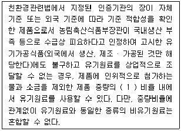
- 20%
- 15%
- 10%
- 5%
(정답률: 64%)
86. 친환경관련법상 허용물질의 선정 기준으로 틀린 것은?
- 사람의 건강과 식품 안전을 증진할 것
- 해당제품 생산에 필수적이며 가장 적합할 것
- 소비자단체 및 이와 관련된 단체의 저항이나 반대가 있어야 하지만 소비자의 일반적인 의견은 반영하지 아니 할 것
- 천연에서 유래한 것 또는 생물학적 방법으로 얻어진 것이거나 재생 가능한 자원일 것(재생 불가능한 자원을 이용한 화학물질은 원칙적으로 금지)
(정답률: 76%)
87. 친환경관련법상 비식용유기가공품의 표시 문자로 틀린 것은?
- 유기사료
- 유기농 사료
- 유기조사료
- 유기식품 사료
(정답률: 69%)
88. 다음 중 (a), (b)에 알맞은 내용은?(관련 규정 개정전 문제로 여기서는 기존 정답인 2번을 누르면 정답 처리됩니다. 자세한 내용은 해설을 참고하세요.)
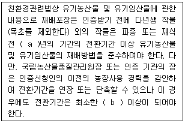
- a : 2, b : 2년
- a : 2, b : 1년
- a : 3, b : 2년
- a : 3, b : 6개월
(정답률: 59%)
89. 친환경관련법에서 70퍼센트 이상 유기농축산물인 제품의 제한적 유기표시의 기준으로 옳지 않은 것은?
- 표시장소는 주 표시면을 제외한 표신면에 표시할 수 있다.
- 원재료명 및 함량 표시란에 유기농축산물의 함량을 백분율로 표시하여야 한다.
- 유기 또는 이와 유사한 용어를 제품명 또는 제품명의 일부로 사용하는 것을 제외하고 사용할 수 있다.
- 최종 제품에 남아 있는 원재료에 정제수를 포함하여 70% 이상이 유기농축산물이어야 한다.
(정답률: 53%)
90. 친환경관련법상 무항생제축산물의 사료 및 영양 관리로 옳지 않은 것은?
- 생산을 위한 가축은 항생제가 첨가되지 아니한 사료를 급여하여야 한다.
- 반추가축에게 포유동물에서 유래한 사료(우유 및 유제품을 제외)는 어떠한 경우에도 첨가하여서는 아니 한다.
- 가축의 개생충 감염 예방을 위하여 사료에 첨가하여 주기적으로 구충제를 투여해도 된다.
- 극한 기후조건 등으로 인하여 사료 급여가 어려운 경우 국립농산물품질관리원장은 일정 기간 일반사료를 급여하는 것을 허용할 수 있다.
(정답률: 55%)
91. 다음 중 ( )에 알 맞은 내용은?
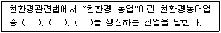
- 농산물, 가공품, 임산물
- 농산물, 축산물, 해산물
- 농산물, 가공품, 해양생물
- 농산물, 축산물, 임산물
(정답률: 71%)
92. 친환경관련법상 유기가공방법으로 틀린 것은?
- 유기식품의 가공 및 취급 과정에서 진리 방사선을 사용할 수 없다.
- 추출을 위하여 에탄올, 식물성 및 동물성 유지, 질소는 사용할 수 없다.
- 저장을 위하여 공기, 온도, 습도 등 환경을 조절할 수 있으며, 건조하여 저장할 수 있다.
- 식품을 화학적으로 변형시키거나 반응시키는 일체의 첨가물, 보조제, 그 밖의 물질은 사용할 수 없다.
(정답률: 64%)
93. 다음 중 ( )에 알맞은 내용은?
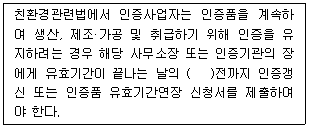
- 1개월
- 2개월
- 3개월
- 6개월
(정답률: 46%)
94. 친환경관련법상 유기재배 인증농가 위반사례 중 행정처분 기준이 인증취소에 해당하지 않는 것은?
- 부정한 방법으로 인증을 받은 경우
- 전업, 폐업 등의 사유로 인증품을 생산하기 어렵다고 인정하는 경우
- 인증품이 아닌 제품을 인증품으로 표시 또는 광고한 것으로 인정되는 경우
- 인증신청서, 첨부서류, 인증심사에 필요한 서류를 거짓으로 작성하여 인증을 받은 경우
(정답률: 66%)
95. 친환경관련법에서 유기식품 등의 유기표시 기능으로 틀린 것은?
- 표시도형의 국문 및 영문 모두 글자의 활자체는 고딕체로 하고, 글자 크기는 표시 도형의 크기에 따라 조정한다.
- 표시 도형의 색상은 녹색을 기본 색상으로 하되, 포장체의 색깔 등을 고려하여 파랑색, 빨강색 또는 검정색으로 할 수 있다.
- 표시도형의 크기는 포장제의 크기에 따라 조정할 수 없다.
- 표시 도형의 위치는 포장제 주 표시면의 측면에 표시하되, 포장재 구조상 측면 포시가 어려울 경우에는 표시 위치를 변경할 수 있다.
(정답률: 70%)
96. 친환경관련법상 유기축산물에서 가금류의 사육장 및 사육조건으로 틀린 것은?
- 가금은 개방조건에서 사육되어야 한다.
- 가금은 케이지에서 사육해야 한다.
- 가금은 기후조건이 허용하는 한 야외 방목장에 접근이 가능하여야 한다.
- 물오리류는 기후조건에 따라 가능한 시냇물 등에 접근이 가능해야 한다.
(정답률: 75%)
97. Codex 유기식품의 생산·가공·표시·유통에 관한 가이드라인에서 사용되는 용어의 설명으로 옳은 것은?
- “소관당국(Competent authority)”이란 권한을 갖는 공식 인증기관이다.
- “농산물/농산물 유래 제품(Agricultural product/product of africultural origin)”은 인간의 섭취 또는 동물사료용으로 판매되는 모든 가공품을 말한다.
- “표시(Labelling)”는 손으로 쓴 것은 인정되지 않으며 인쇄나 그림으로 나타낸 라벨이다.
- “식물보호제(Plant Protection Product)”는 식품, 농산물, 사료의 생산, 저장, 운송, 분배, 가공하는 과정에서 원하지 않는 동식물, 병해충을 예방, 파괴, 유인, 퇴치, 억제하기 위해 사용하는 물질을 말한다.
(정답률: 60%)
98. 다음 중 ( )에 알맞은 내용은?
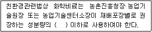
- 1/2
- 1/3
- 2배
- 3배
(정답률: 73%)
99. 친환경관련법상 인증품 및 인증사업자에 대한 사후관리를 하는 자는?
- 연구원
- 사무소장
- 지원장
- 조사원
(정답률: 59%)
100. 친환경관련법상 무농약농산물등의 인증대상이 아닌 것은?
- 무농약농산물을 생산하는 자
- 무항생제축산물을 생산하는 자
- 무농약농산물을 취급하는 자
- 무비료농산물을 생산하는 자
(정답률: 58%)